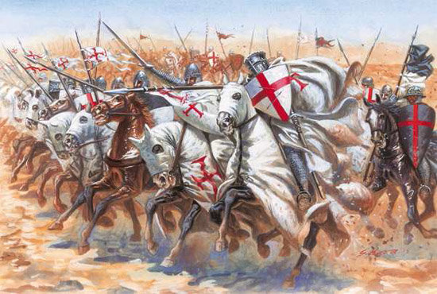
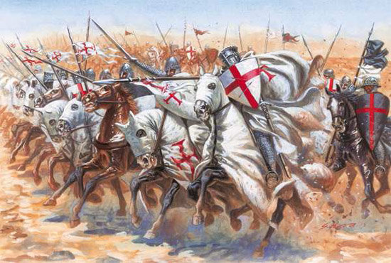
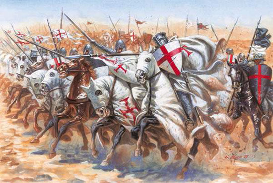

Gustos Culturales

Me encanta la danza folklórica, no solo la practico regularmente, sino que también disfruto profundamente estudiando sus raíces y la cultura que la rodea. Me fascina cómo a través de la danza se transmiten historias y tradiciones. Además, soy un apasionado de la Historia, especialmente de la época europea clásica, donde encuentro inspiración en sus eventos, personajes y transformaciones sociales que marcaron el curso de la humanidad. Ambos intereses me permiten explorar distintas culturas y épocas, lo que enriquece mi visión del mundo.